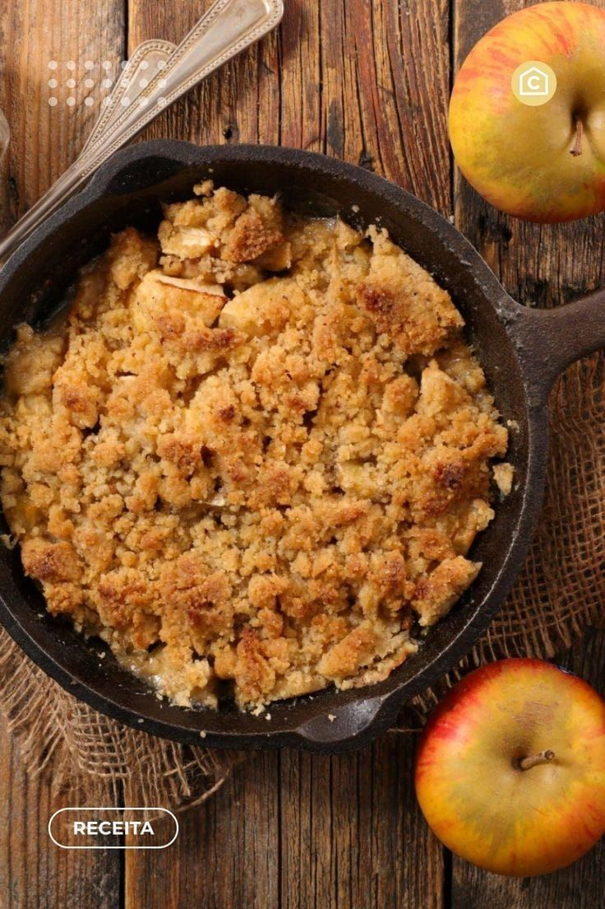
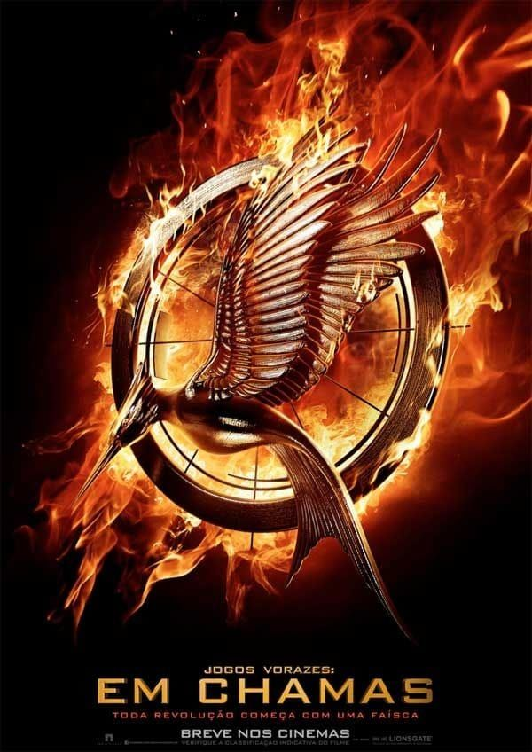
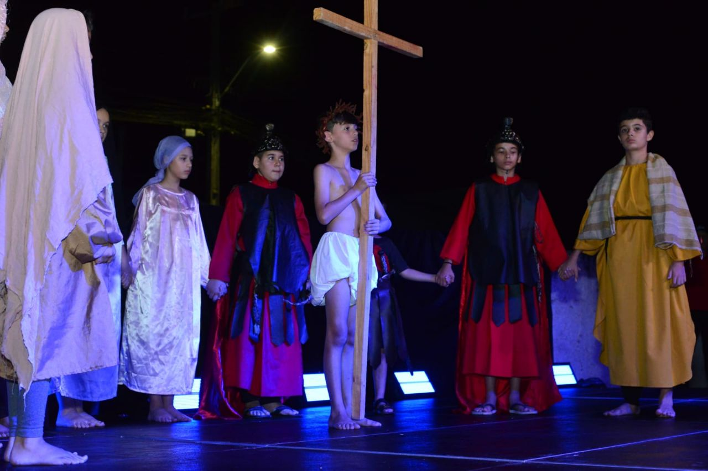
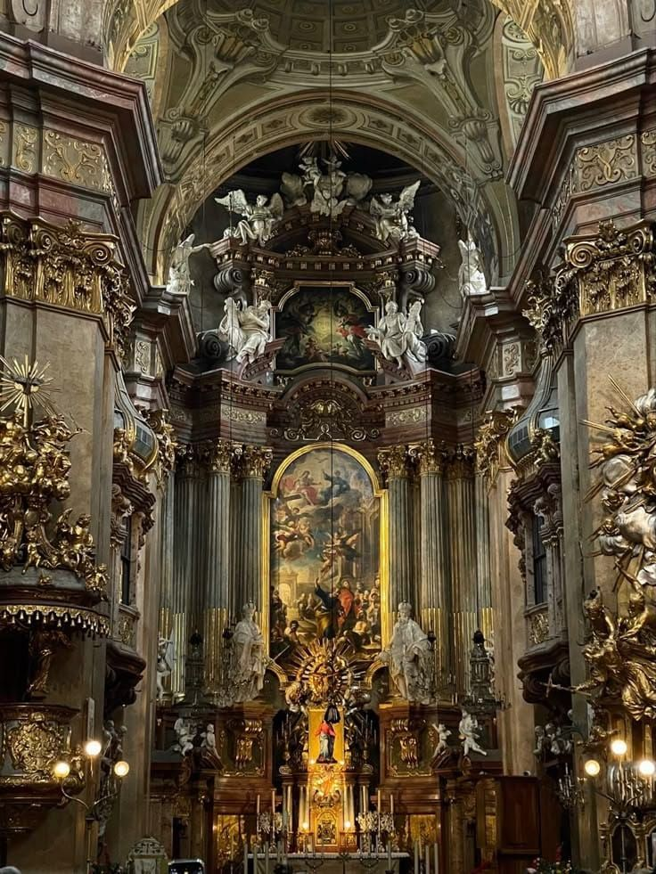

Minhas Paixões

Meu Doce Favorito: Crumble de Maçã
Desde pequena, o Crumble de Maçã sempre teve um lugar especial na minha vida. Além de ser delicioso, ele me traz lembranças incríveis da infância!

Meu Filme Favorito: Jogos Vorazes
Um filme que me conquistou pela história intensa e pela força incrível da protagonista. Jogos Vorazes é muito mais do que uma luta — é sobre coragem e esperança.

Destaque na Criação de Figurinos para Espetáculo Teatral
Criar figurinos é uma das minhas maiores habilidades. Com dedicação e criatividade, consegui dar vida aos personagens infantis dessa peça tão especial.

Minha Fé na Igreja Católica Apostólica Romana
A Igreja Católica é para mim uma casa espiritual, onde encontro fé, amor e esperança para enfrentar os desafios do mundo.